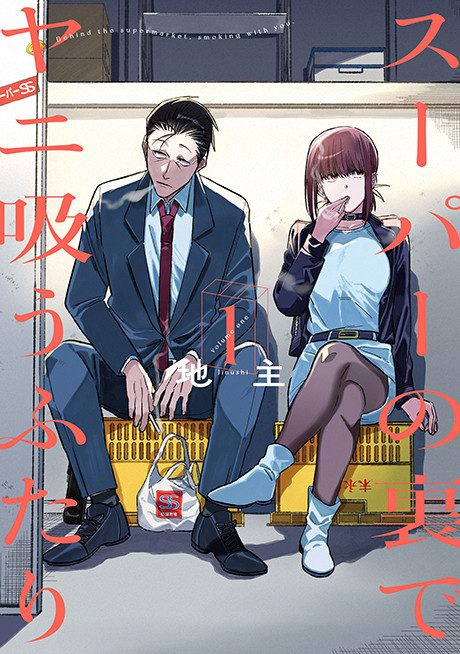

Smoking Behind the Supermarket with You
スーパーの裏でヤニ吸うふたり
After the anime, read the manga from Chapter 29.
8.1AniList score
—Animeter, no votes yet
12episodes
Is it worth pushing through?
Built from what visitors report across all 12 episodes.
Loading reports…Checking what other people said about this one.
Sign in above with your email to add your report.